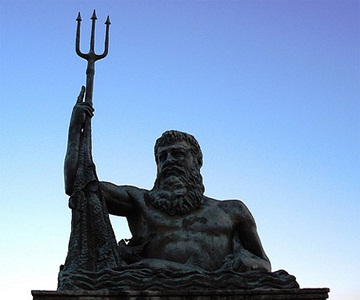
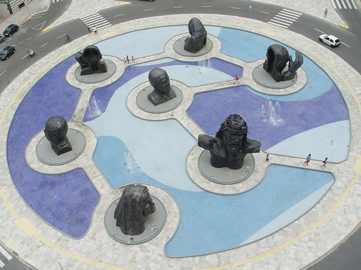
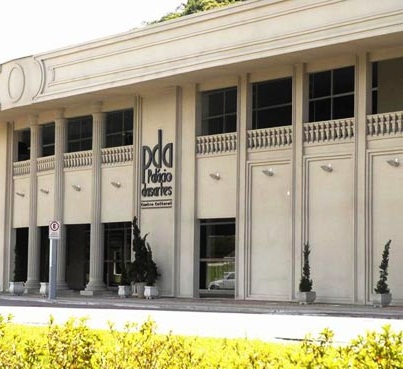
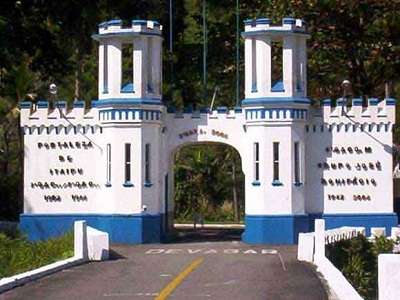
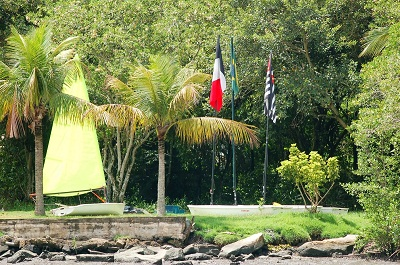
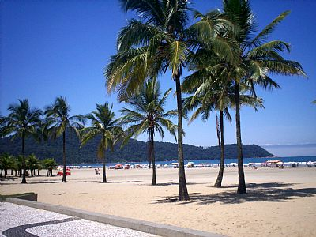
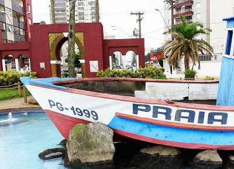
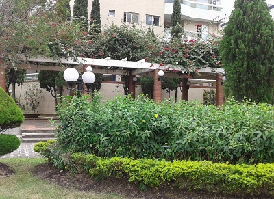
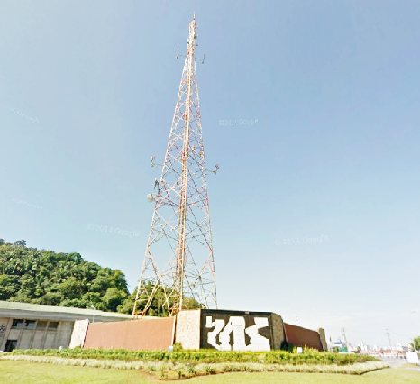

Netuno

{kind=link}
A Estátua de Netuno é um dos um dos marcos da Cidade Ocian e está localizada na orla da Praia Ocian, de frente para a Avenida Dom Pedro II. Na mitologia greco-romana, Netuno era o Deus do mar e das águas. A estátua é edificada toda em bronze e impressiona pela sua grandeza e pela exatidão de seus detalhe,foi esculpida em bronze pelo prof. Alberto Bernine por ocasião da inauguração do bairro. A cerimônia de inauguração da estátua aconteceu em 27 de Maio de 1956.
Endereço
Praça da paz

{kind=link}
Inaugurada em 2006, a Praça da Paz possui sete esculturas de aço carbono e ferro que representam personalidades históricas que defenderam a paz no mundo: Sérgio Vieira de Mello, Jesus Cristo, Maria Mãe de Jesus, Papa João Paulo II,I, Madre Tereza de Calcutá, Mahatma Gandhi e Nelson Mandela, e possuem aproximadamente de 10 metros de altura e até 30 toneladas cada uma.Foi Reformada em 2014 agora as grandes esculturas tem contraste com um lindo paisagismo.
Endereço
Palacio das Artes

{kind=link}
O complexo cultural é um dos mais importantes na região.Apresenta fachada com ares neoclássico.Por dentro,abriga o Salão de Eventos, com capacidade para mil pessoas, além de loja e cafeteria.O Museu da Cidade abriga exposições renovadas frequentemente. a Galeria Nilton Zanotti segue padrões expositivos internacionais, e abriga tanto exposições de grande destaque na mídia quanto de artistas da região. O terraço é local que abriga exposição permanente de esculturas.
Endereço
Forte Itaipu

{kind=link}
Sua construção foi iníciada em 1902. Na época era um local inacessível e totalmente selvagem.
Em razão da necessidade de manter o Forte protegido de tudo e de todos, a extensa área ao seu redor tornou-se uma reserva ecológica de valor inestimável. Tornou-se um exemplar raro e extenso da Mata Atlântica original, praticamente dentro da cidade de Praia Grande.è um patrimonio histórico único , o que vem reforçando cada vez mais a sua vocação turística.
Endereço
Portinho

{kind=link}
O Portinho Contem inúmeras atrações, para todos os tipos de gostos,para aqueles que gostam de esportes ou navegação, poderá optar entre barcos a vela, remo e até embarcações de pesca profissional, se o interesse for permanente, poderá frequentar a escola de remo e vela, o portinho conta com 23 quiosques e restaurante no local.A natureza é atração à parte, é o lugar ideal para passar um dia tranquilo.
Endereço
Praias

{kind=link}
As praias possuem uma larga extensão,e recebem um grande numero de turistas na temporada e feriados.Conta com postos de salva-vidas e ao longo de sua orla e são divididas pelos bairros: Canto do Forte, Boqueirão, Guilhermina, Aviação, Vila Tupi, Ocian, Vila Mirim, Vila Caiçara, Balneário Flórida e Solemar.
Endereço
Praça Lions

{kind=link}
Conhecida popularmente por Praça do Barquinho em razão ao pesqueiro de madeira, a Praça Lions na Praia Guilhermina, presta homenagem ao primeiro clube dessa entidade em Praia Grande e também à atividade de pesca comercial inicial do Município. No local, há um portal alvenaria de estilo mouro, que dá acesso ao barco e a um chafariz,a embarcação recebeu o nome de Praia Grande
,
Endereço
Praça Ceferino Gonsalez Vega(Praça das Bandeiras)

{kind=link}
A área central tem quatro bandeiras: do Brasil, do Estado de São Paulo, de Praia Grande e outra em comemoração aos 500 anos de descobrimento. Em outro ponto estão as demais 26 bandeiras dos estados. Há ainda duas áreas anexas com paisagismo estilo europeu, com muitas rosas em meio a fontes e espelhos d’água o local é um belo cenário para fotos.
Endereço
Praça a Tribuna

{kind=link}
A praça a tribuna é uma homenagem aos 116 anos de existencia do jornal tribuna e ao sistema de comunicação a Tribuna - SAT ,a Praia Grande foi a terceira cidade á receber o sinal digital.A antena tem altura de 75 metros (equivalente à altura de um edifício de 25 andares),a praça também é conhecida por Praça das Comunicações, já que na base da torre há painéis de granito em alto relevo retratando a imprensa escrita, radiofônica e televisiva.